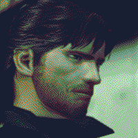
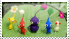
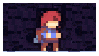

Ari: The guy who's responsible for all of this
Biologist through fascination and self-proclaimed artist through the need to create. I have an interest in old tech, ecology, weird software and plants. When I'm not working on this website I like to fold origami, draw, and find new ways to express myself creatively.
favorite places: aquariums, temperate rainforests, thrift stores
favorite media: twin peaks, outer wilds, music has the rights to children
""In honour of your will, lieutenant-yefreitor. That you kept from falling apart, in the face of sheer terror. Day after day. Second by second."



